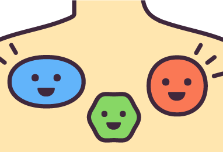
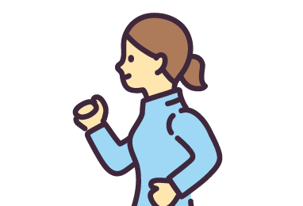
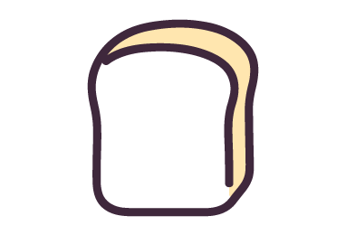
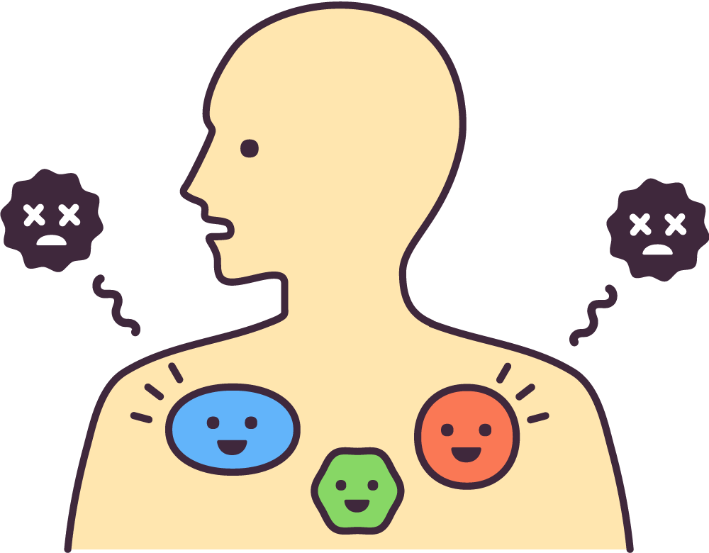

からだのけんこう
イラストをタッチして調べてみよう！



免疫(めんえき)って？

外から入ってきたウイルスや細菌(さいきん)から、からだを守る防御(ぼうぎょ)システムだよ。わたしたちのからだが健康（けんこう）でいられるのは、免疫（めんえき）のおかげなんだよ。
もっとくわしく！
免疫は、からだの外から入った侵入者（しんにゅうしゃ）である、細菌（さいきん）やウイルスなどに対して免疫細胞（さいぼう）などが「自分」と「自分でないもの」を識別（しきべつ）して、攻撃（こうげき）したり、追い出したりしてからだを守ります。
※このサイトページの文章は、中外製薬株式会社より許諾を得た上で、「ウェブサイト利用規定」にのっとりホームページのコラムテキストを一部抜粋して作成しています。
出典: https://www.chugai-pharm.co.jp/ptn/medicine/karada/index.html